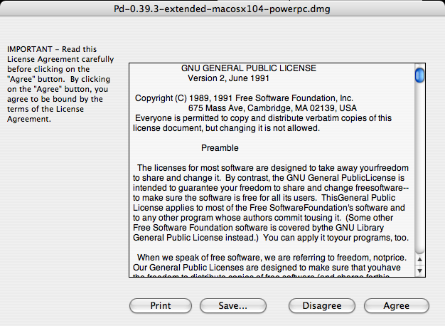
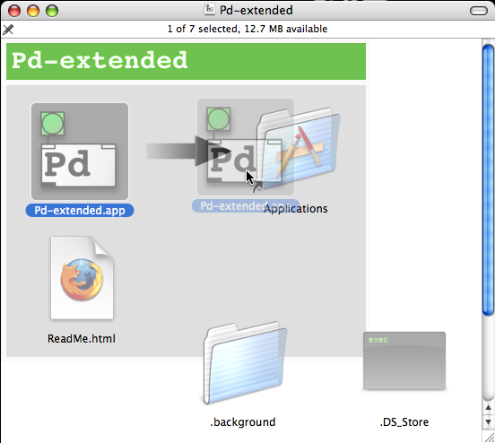
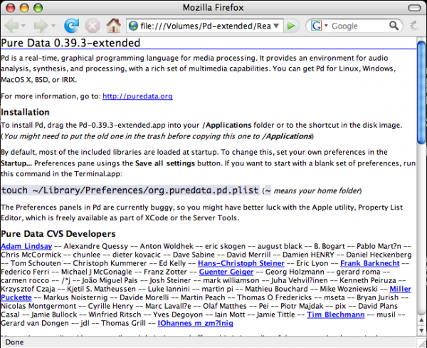
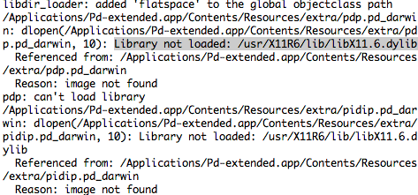
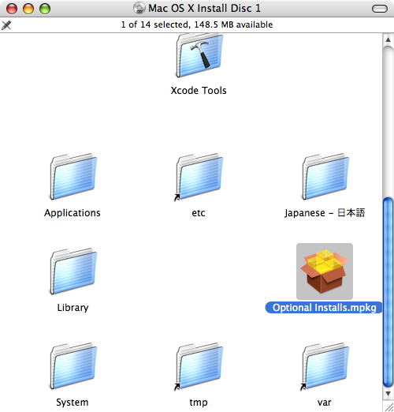
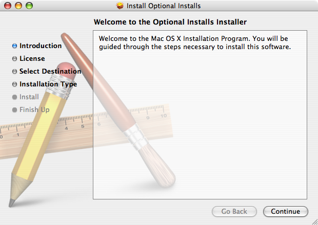
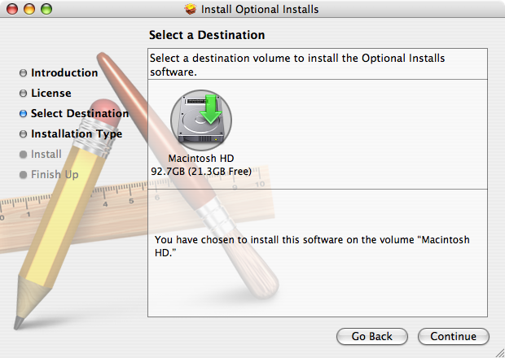
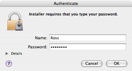

Installing on OS X
Software name : Pd-extended
Homepage : http://puredata.info
Software version used for this installation: Pd-extended 0.39.3
Operating System use for this installation: Mac OS 10.4.11
Recommended Hardware : Any Mac running Mac OS X 10.4 or later
To begin the installation visit the download page for Pure Data ( http://puredata.info/downloads ) :

You can download either Miller Puckette's version of Pure Data, or Pd-extended. Miller's version of Pure Data is called "Pd-vanilla" because it has just the basic minimum set of functionality. It does not contain any external libraries or any of the features developed by the Pure Data community which are included in Pd-extended. We will use Pd-extended for this manual, so chose your installer from the "Pd-extended" section of this webpage.
Since there is not a "Universal Binary" for Pd-extended, you will want to select the Mac OS X installer that best suits your computer. Use the one labelled "Mac OS X i386" for the newer, Intel-processor equipped Mac computers. For example, any Mac Pro or MacBook is an Intel Mac. Any iMac that is less that a couple years old is an Intel Mac.
Use the "Mac OS X PowerPC" installer if you have a PowerMac, PowerBook, or iBook with a G4 or G5 processor running Mac OS 10.4 "Tiger" or later. Older iMacs use G4 and G5 processors, so they use the PowerPC version as well.
If your computer has a G3 processor or is running Mac OS X 10.3 Panther, then you will need to use older version of Pd-extended, 0.39.3. You can see all of the older versions on the downloads page by clicking on  . There you can also find installers for versions of Mac OS X older than 10.3 Panther.
. There you can also find installers for versions of Mac OS X older than 10.3 Panther.
Once you've downloaded the right installer, you'll have a .dmg (Disk Image) on your harddrive.

Double click to open and mount it, and you will have a chance to read and accept the License Agreement.

Once you click "Agree", the Disk Image will mount and automatically open. Then simply drag the Pd-extended.app to the provided shortcut to your Applications folder (or to another location of your choice.) This will copy Pd-extended to your harddrive.

After that, make sure to check the "ReadMe" file for important installation information.

As indicated, the Pd-extended.app is setup by default to load most of the included external libraries. If you want to change the libraries which are loaded at startup time, or any of the other startup settings, please notice the instructions here in the "ReadMe", and be sure to read the chapter "Configuring Pure Data" in this manual.
From here, you can open up your "Applications" folder in the Finder, and start Pd by clicking the "Pd-extended.app" icon found there.

Status: X11 Library not loaded
When starting Pd-extended it will check to see if all standard libraries are loaded. The X11 library is an expected fundamental graphics library. If you see the following error message in the Pd window, you do not have X11 installed on your Mac. Instructions to install X11 follow.

Installing X11 on Mac OS X 10.3 Panther and 10.4 Tiger
Pd-extended needs X11 for some graphics libraries. Starting with Mac OS X 10.5 Leopard, X11 comes installed by default. If you are running Mac OS X older than 10.5 Leopard, then you will need install it yourself, if you haven't already. It comes on your Mac OS X DVD or CD. If you no longer have that DVD or CD, then you can find it online. The FAQ on puredata.info has the current links: http://puredata.info/docs/faq/macosx
- Insert your OS X Tiger Install Disc (#1). Scroll down to locate the Optional Installs icon and double-click it
 - Click Continue on the first screen
 - Read the Software License Agreement and then click Continue

- Click Agree

- Select a location and click Continue
 - Click the small triangle directly next to Applications and then place a check in the box labeled X11. When you’re ready, click Upgrade.

- Enter your password when prompted, and then click OK
 - Wait until it finishes installing...

- After X11 has successfully installed, click Close

- And that's it, X11 is installed